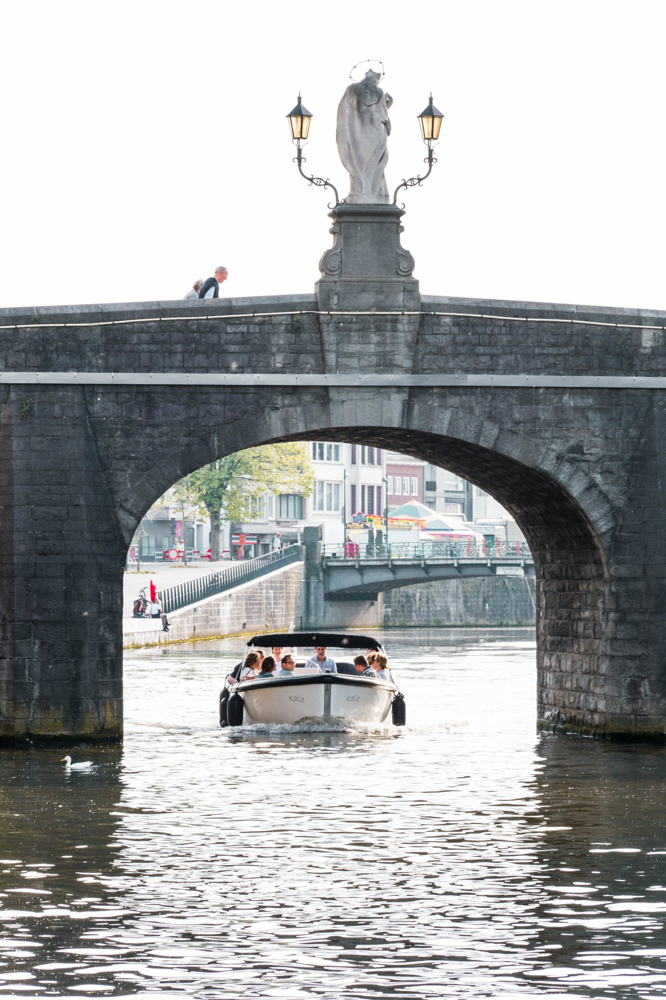
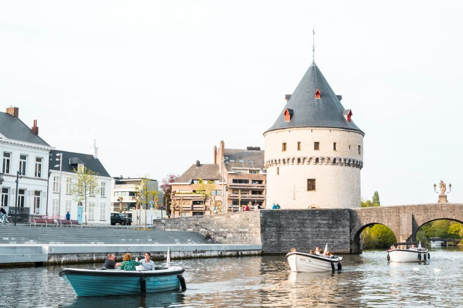

12 personen · vanaf €190
Liese
Ruime pontonboot met comfortabele banken, stuurstand, hifi en koelkast. Perfect voor groepen die extra plaats willen.
Kortrijk vanaf het water
Met De Keper huur je een comfortabele boot voor vrienden, familie of collega’s. Geen vaarbrevet nodig: vanaf 21 jaar kan je zelf varen en Kortrijk op een andere manier beleven.

De ervaring
Vertrek vanuit hartje Kortrijk, vaar langs de Leie en kies je eigen tempo. De preview zet de sfeer en de praktische info sneller in beeld, zodat bezoekers sneller durven boeken.


De vloot
Ruime pontonboot met comfortabele banken, stuurstand, hifi en koelkast. Perfect voor groepen die extra plaats willen.

Stoere reddingssloep met ruime achterbank, luxe kussens en boegschroef.

Gezellig, praktisch en ruim genoeg voor een ontspannen uitstap met vrienden.

Moderne look, ingebouwde koelkast en ideaal voor een kleinere groep.

Klein maar fijn: toegankelijk, rustig en charmant voor een korte tocht.
Vertrekpunt
Alle tochten vertrekken en eindigen in het centrum van Kortrijk. De route kan richting Harelbeke en Menen, met een volledig traject van ongeveer vier uur.
Familiedag · vriendenuitstap · teambuilding · verjaardag
Contact
Bel of mail De Keper voor beschikbaarheid, vragen of reservaties.